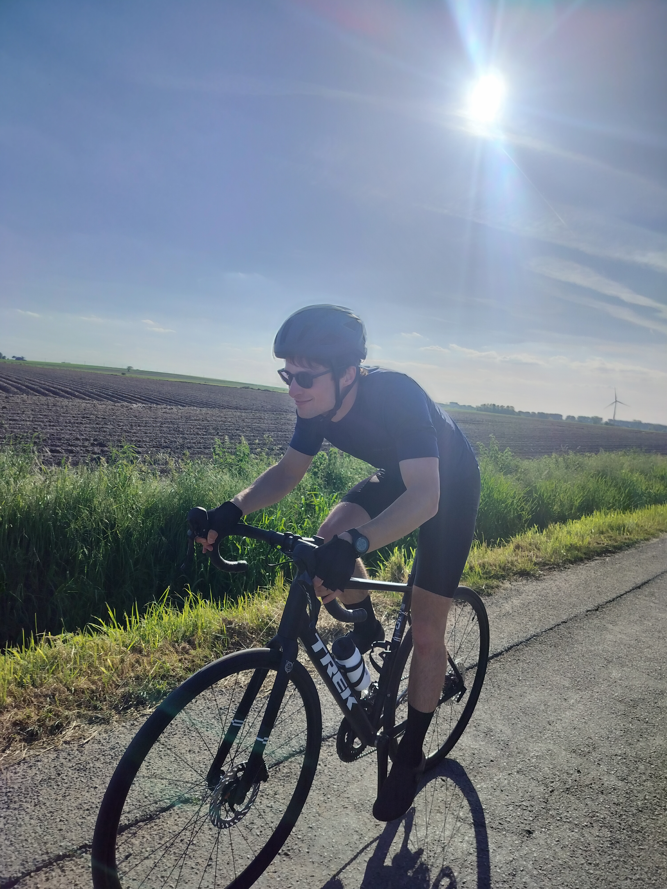
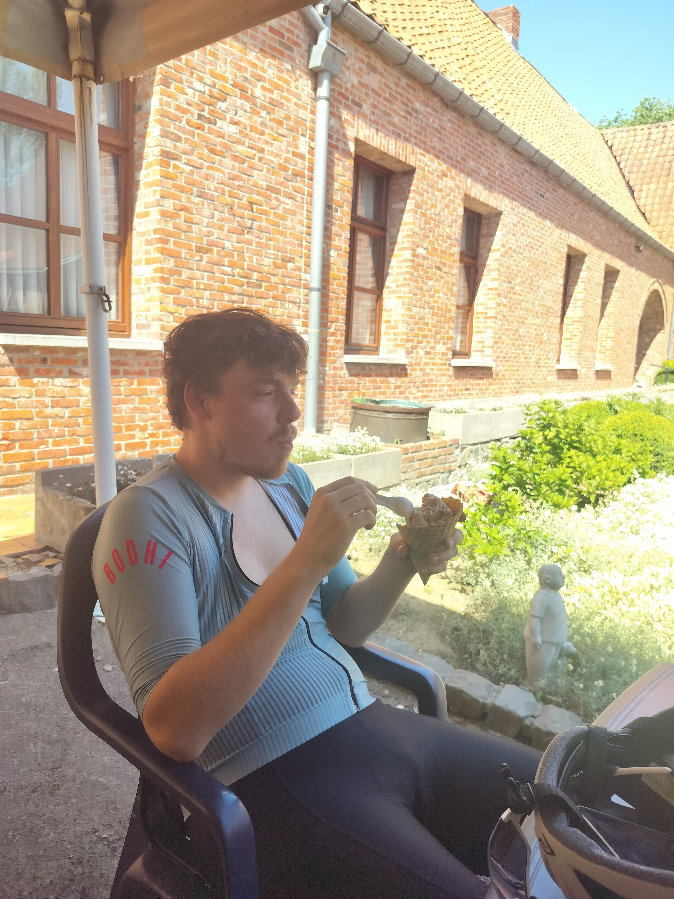

De Saloncoureurs
Leden
Ontmoet de rasechte Flandriens van De Saloncoureurs. Van tactische meesterbreinen in de bestuurskamer tot ontembare kilometervreters en herstellende strijders in de ziekenboeg: dit is de ploeg die weer en wind trotseert (zolang de thermometer maar de dertig graden aantikt).

Onze gerespecteerde leider en rasechte Flandrien. Beheert de clubkas en tikt met veel liefde de updates van de site.

Rechterhand van de president en tactisch vernuft. Rijdt in blessuretijd alweer de stenen uit de wielerbanen.

Kersverse versterking in de breedte. Slaagde er weliswaar al in twee ritten af te zeggen, maar de verwachtingen blijven torenhoog!

Nieuwe top-aanwinst. Staat te trappelen om de gevestigde kopmannen te degraderen tot trouwe domestiques.

Koning van de Wielermanager, DJ bij Chasse Patate en trouwe fan van Dame Rouge. Soms ietwat vergeetachtig op zondagochtend.

Jin-leider, meester en lid van de Club van 1000. Revalideert momenteel vanuit de tuinstoel voor hij de Alpen temt.

Blokker en snelheidsduivel. Combineert de boeken feilloos met flukse en uiterst krachtige trainingsritjes.

Lid van de 'comeback club'. Schudde in mei zomaar een marathon uit zijn mouwen. Klaar voor meer moois in juli!

Momenteel rustig herstellende van een liesbreuk om sterker dan ooit terug te keren voor Kuurne-Brussel-Kuurne 2027.

Op weg naar de triatlon van Warschau. Trainen, zweten en af en toe een stevige ontbijtrit plannen.

Stille, ijzersterke kracht van het peloton en een van de trotse pioniers in de Club van 1000.

Verantwoordelijke voor menig zondagsrit en altijd op zoek naar die extra, uitdagende kilometers.

Trapt vrolijk door weer en wind, met de blik gericht op zijn intrede in de felbegeerde Club van 1000.

Verwart met de glimlach grindwegen met biljartvlak asfalt. Routeplanner met een avontuurlijk randje.